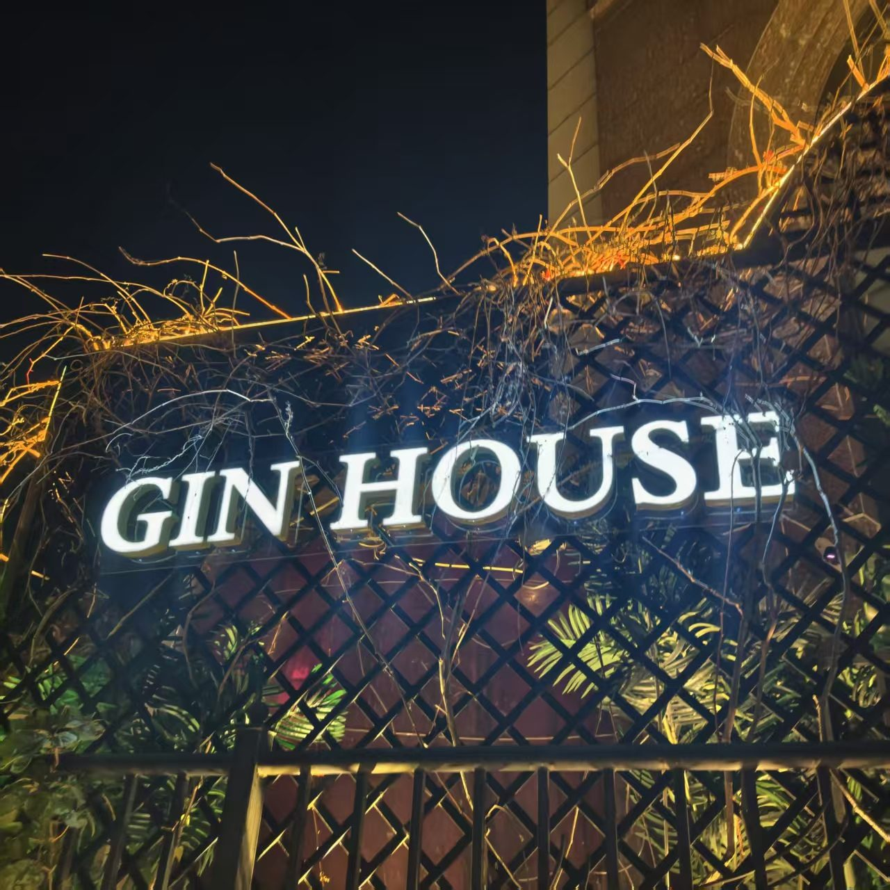
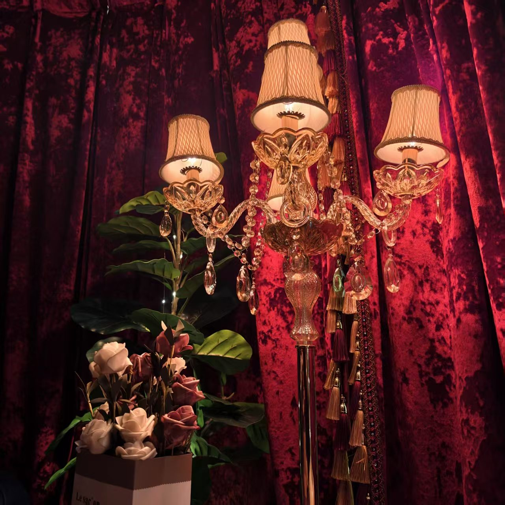
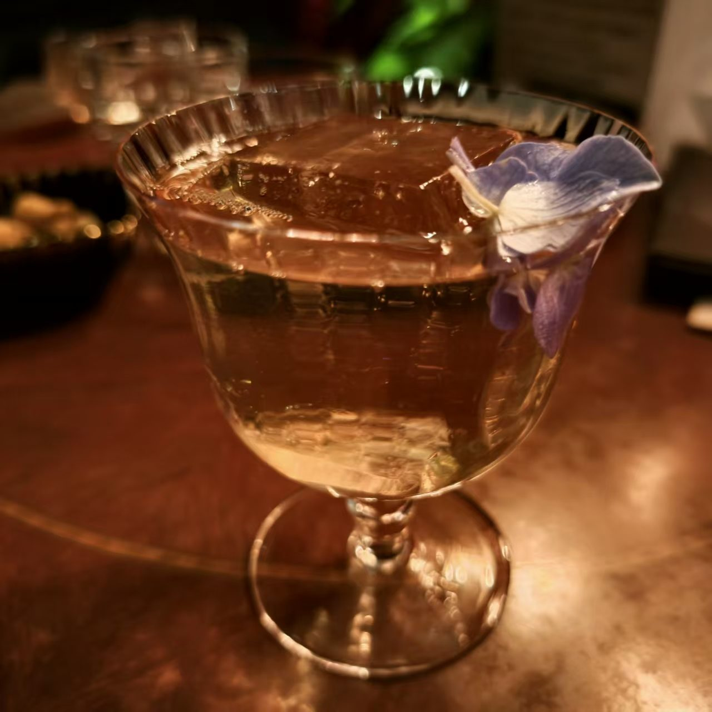
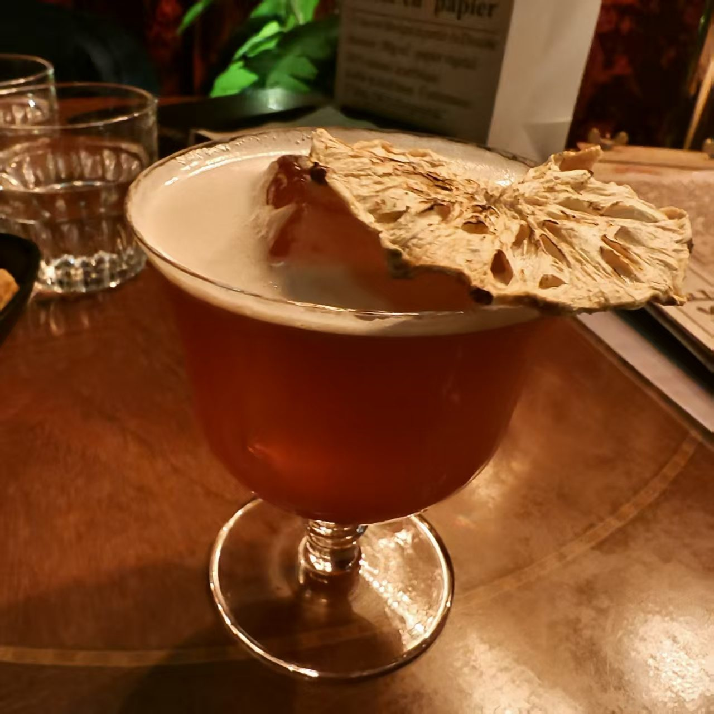
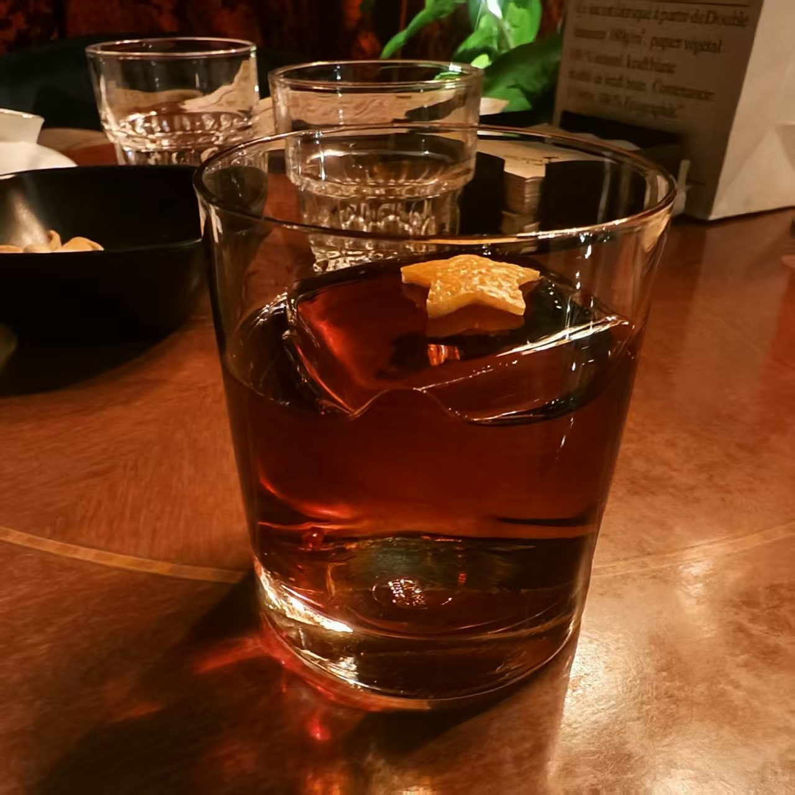

Gin House
Gin House 在渔阳饭店楼下。我跟这一带挺有缘，之前来这边打过牌，也去过附近的萤酒吧。

这次订了一个小包间。那天挺冷，房间里挂着暗红色丝绒帘，灯是暖黄色的，坐下来以后才暖和过来。

第一杯叫「最后夏天」，是以金酒为底的 signature，里面有芭乐和茉莉花。我不太喜欢这杯：刚入口醇味比较重，芭乐和茉莉花的味道也没有融合在一起，各是各的。

第二杯「伯爵庄园」也是金酒，加了伯爵茶和接骨木。这杯融合得还可以，比第一杯更合我的口味。

最后一杯叫「百年雪茄」，是朗姆酒加咖啡。这杯非常甜，我觉得非常难喝。
